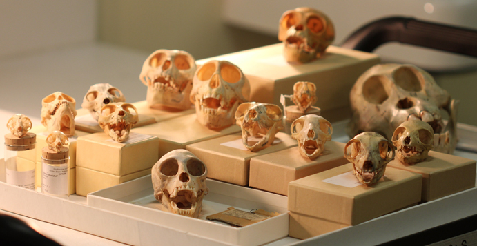

Research
Living species represent less than 1% of all species that have ever lived. Ignoring fossil taxa may lead to misinterpretation of macroevolutionary patterns and processes such as species richness (e.g. Proboscidea are represented by just 2 extant genera but that number rises to 43 when including the extinct genera); paleobiogeography (e.g. Tinamiforms are currently found only in South America but their range also included New Zealand in the past if one includes the extinct Moas) or ecological diversity (e.g. Crocodilomorphs are either fluvial or coastal but the fossil record also contains pelagic, terrestrial and semi-arboreal species)
Fossils can be included in phylogenetic trees either as nodes or as tips. Both ways are usually confined to different fields using different statistical approaches:
I am interested in one third method, called the total evidence method (or tip dating), which allows to use fossils with a probabilistic approach.
Although the total evidence method seems very promising, it requires a lot of data and is therefore likely to suffer from missing data issues which may affect its ability to infer correct phylogenies. Through a simulation approach, I am testing what is the actual effect of missing data in recovering the good tree topology.
Total evidence supermatrices contain both living and fossil species and both molecular (for living species only) and morphological data (for both living and fossil species). In my simulations, I am generating random total evidence supermatrices and removing various amount of data from the morphological part. I then infer the phylogeny from these matrices in a Maximum Likelihood and a Bayesian framework (with all the data and with various amount of missing data). Finally I compare the topology of the tree inferred from the matrix with no missing data to the others matrices.
I found that the Bayesian framework performs really badly in recovering the tree topology (whatever the amount of missing data) and that the Maximum Likelihood approach works way better as long as a some morphological data is overlapping for the majority of taxa.
Primates, the taxonomic order to which we belong, are one of the most studied vertebrate groups. Massive quantities of molecular and morphological data are available for extant species and the fossil record of this group is very well studied. Primates are divided into two groups: Haplorrhini (Tarsiiformes, Simiiformes and Omomyiformes) and Strepsirrhini (Adapiformes, Lorisiformes and Lemuriformes). Extant Strepsirrhini are less diverse than Haplorrhini in species richness (Strepsirrhini: ~70sp – Haplorrhini: ~150sp.); biogeographical distribution (Strepsirrhini: South-East Asia, Africa and Madagascar – Haplorrhini: South-America, Africa, Asia - or the whole world if including Homo sapiens!) and body mass variance (Strepsirrhini: 100g-3.5kg – Haplorrhini: 125g-120kg). However, if one includes the fossil Strepsirrhini, all of these variables become closer to the patterns seen in Haplorrhini (~200sp.; distribution in the whole old world and northern Africa; body mass ranging fron 100g to 120kg).
I am building a strepsirrhini tree with 70 nuclear and morphological genes for 70 living and 4 sub-fossil taxa and 1000 morphological characters for 25 living and 46 fossil taxa using the total evidence method approach.